ליקוטי הלכות עירובי תחומין ב, א: בשבת נמשכים החיים לעולם, שהיא מקור הברכה, ולכן בשבת ניתנה התורה. וצריך להיזהר שלא יהיה ריבוי השמן גורם לכיבוי הנר. ולכן אסור לצאת מחוץ לתחום, כדי להגביל את המשכת החיים לתחום שהכלים שלנו מסוגלים לקלוט. ומעבר לזה הוא דרישה אל המופלא. "שכל פסיעה שאדם הולך ממקום למקום, הוא בא בכל פעם בעולמות אחרים".
שם ב, ב: "ועל כן התחומין הם משתנין לכל אחד ואחד מישראל בפני עצמו כפי מה שקנה שביתה בערב שבת, כי כל אחד מישראל יש לו תחום אחר לפי מדרגתו והשגתו..." ואפשר לקנות מקום שביתה על ידי הנחת לחם, "כי הלחם הוא בחינת הדעת, בחינת מן, בחינת לחם מן השמים שמשם אנו למדין תחומין, כמו שכתוב, שבו איש תחתיו וכו'. ועל כן מאחר שזכה בחול להמשיך השפעת הלחם עד אותו המקום שהניח שם העירוב, דהיינו הלחם שהוא בחינת דעת, על כן קנה שביתה הנ"ל שם, ומשם מתחיל תחום הנ"ל כנ"ל. ועל כן העירוב הוא מזון ב' סעודות כנגד המן שירד על ב' סעודות, ומשם אנו למדין תחומין כנ"ל".
ואלפיים אמה רומזים לאלפיים שנה שקדמה תורה לעולם (אלפיים מדרגות שהשתלשלה. ומבאר שם ג, א, שאלו אלפיים מדרגות של כלים וצמצומים כדי שתיקלט התורה).
ליקוטי הלכות ג (בהקדמה): "איתא בדברי רבנו ז"ל על פסוק אלה מסעי בני ישראל (סימן מ) שכל הנסיעות הם בשביל פגם עבודה זרה, דהינו קלקול האמונה... ועל ידי הנסיעות והטלטולים מכפרים על פגם עבודה זרה... וזה בחינת אלה מסעי בני ישראל, שמסעי בני ישראל היינו הנסיעות של ישראל מכפרין על אלה אלהיך ישראל דהיינו עבודה זרה".
שם ד, ג: "כי כל הנסיעות והטלטולים הם באים מבחינת חטא אדם הראשון". שם ה, יד: "כי כל הטלטולים של כל אדם הם בחינת גירוש וגלות שנמשך מבחינת ויגרש את האדם וכו' על ידי חטא אכילת עץ הדעת טוב ורע, שמשם נמשכו כל גלויות ישראל שהולכים מטולטלים נע ונד מגולה אל גולה. והכל בשביל בירור האמונה שנתקלקלה מחטא אדם הראשון ועל ידי חטאי הדורות".
וזו רחמנות מאת ה' לכפר לנו על ע"ז על ידי נסיעות, אבל עיקר הרחמנות שאנחנו בעצמנו נרחם על עצמנו, ואז לא נצטרך לנסיעות כדי לתקן הפגם, וזה עניין השבת.
שם ג, א: "...בבחינת רחמים סתם שם יש בחינת צמצום, והרחמים הוא על פי בחינת דין ומשפט, ועל כן יכול להיות שהיסורים ח"ו יהיה רחמנות, כי השם יתברך יודע, שעל ידי זה יהיה לו טובה במקום אחר... ובשבת קודש זוכין לבחינת... רחמים רבים, כי אז כל דינין אתכפין ועתיקא קדישא גלי רצון דיליה שהוא בחינת רחמים דעתיקא שהוא בחינת רחמים רבים". שם (ג, ד): "וזה בחינת והתענג על ה' ויתן לך משאלות לבך... וזה זוכין על ידי עונג שבת... כי עיקר התגלות האמונה היא על ידי עונג שבת, כי בירור המאכלים הוא על ידי אמונה... ועל כן בשבת... מצווה לאכול... וזה בחינת ערובי תחומין שמניחין שיעור סעודה ומשם מתחילין האלפיים אמה...".
ליקוטי הלכות ד, א, מבאר שמוכיחי הדור הם בחינת חותם (שהם חותמים את הקדושה במציאות), ויש חותם בבחינת רגליים (מעשה), ויש בחינת ידיים (באמונה). והם מרבים שלום, וכשהרע גובר חותם הרגליים נהפך לנידה, וחותם הידיים לשפיכות דמים. וצריך עזות דקדושה לעמוד כנגד הרשעה ולגלות חותמות הקדושה. שם ד, ב, וכדי להגיע לעזות דקדושה צריך שמחה וחדווה, וזה על ידי "נעשה ונשמע" שעל זה קבלנו שני כתרים.
שם ד, ג: "וזה בחינת תחום שבת, כי תחום אותיות חותם כמובא, כי בשבת מקבלין ישראל הב' עדיים הנ"ל שהם השני כתרים שהכתירו את ישראל בשעת מתן תורה שהיה בשבת, כמובא בכונת ישמח משה במתנת חלקו, בענין האלף אורות שמשה מחזיר לישראל בכל שבת...".
"נמצא שבשבת נתתקן חותם הידים שהוא בחינת אמונה, והעיקר הוא זה החותם, ואזי ממילא נתתקן חותם הרגלין... כי בשבת עולין הרגלין אל הקדושה בבחינת אם תשיב משבת רגליך, וזה עיקר קדושת שבת, כי בחול יש יניקה להסטרא אחרא מבחינת רגלין בבחינת רגליה יורדות וכו'... שהוא בחינת נדות כנ"ל שהוא זוהמת הנחש... וזהו בחינת הטלטולים שהאדם צריך לטלטל עצמו בימי החול ולנסוע ממקום למקום בשביל פרנסתו... בחינת ויגרש את האדם... אבל בשבת קודש אז עולין הרגלין מן הסטרא אחרא... ואז נתתקן חותם הרגלין, כי אז זוכין לאמונה בשלמות שהוא בחינת חותם הידין וכו' וכנ"ל. ועל כן בשבת אין שום טלטול ונסיעה כלל, כי כל הנסיעות והטלטולים הם באים מבחינת חטא אדם הראשון, שהוא בחינת קלקול החותם הרגלין... וכל זה הוא רק בימי החול... ואז צריכין יגיעה גדולה להשיב הרגלין אל הקדושה... וזה בחינת אסור תחומין, דהיינו שאסור לצאת בשבת ממקום למקום חוץ לתחום שבת... כי אז נתתקן חותם הרגלין כנ"ל, וזהו תחום שבת, כי תחום אותיות חותם כנ"ל, כי החותם הוא בעצמו התחום, כי על ידי שמאיר בשבת החותם דקדושה כנ"ל מחמת זה אסור לצאת חוץ לתחום...".
שם ד, ד: "וזה בחינת תחום שבת אלפיים אמה... נמשך משני הכתרים הנ"ל, שהם נעשה ונשמע כנ"ל, שני הכתרים הם שני אלפין, כי כתר הוא בחינת אלף שהוא ראש לכל האותיות, וזהו בחינת אלף האורות שמקבלין בשבת כנ"ל. כי עיקר התוספות הוא רק אלף אורות, כי עיקר התוספות הוא שמקבלין את הנשמע שהוא בחינת נסתר ועושין מהנשמע נעשה כנ"ל, ואזי יש לו נשמע אחר גבוה ממנו... ועל כן עיקר קבלת תוספות שבת הוא רק אלף אורות שהם בחינת כתר אחד כנ"ל. אבל באמת זוכה בשבת לשני כתרים נשמע ונעשה...".
שם ד, ה: "במקום שמניחין שיעור סעודה משם מתחיל התחום שבת, כי עיקר התחום שבת שהוא בחינת חותם... נמשך רק על ידי אמונה... וכל זה מקבלין על ידי אכילת שבת, שהוא בחינת אז תתענג על ה' שזה בחינת עזות דקדושה, בחינת אכלו משמנים וכו' כי חדות ה' היא מעזכם, בחינת ורעה אמונה וכו' כנ"ל, ועל כן עיקר התחום שבת שהוא בחינת חותם, מתחיל ממקום הסעודה, כי משם עיקר תיקון בחינת החותם שהוא בחינת תחום". ומתוך כך ממשיך לבאר שם עניין פורים והסעודה.
ליקוטי הלכות עירובי תחומין ה, כ: "כל הדרכים הם בבחינת חיצוניות, כי ישיבה בבית זה בחינת פנימיות". וההליכה היא כדי להמשיך אלוקות לתוך צמצומים חדשים. "ועל כן האדם בהילוכו בכל פסיעה ופסיעה שהולך הוא בא על נקודה אחרת ששם יש צמצום אחר, כי שם נמשך רוחניות אלוקות מבחינה אחרת, כפי המקום בעולמות עליונים המכוונים כנגד הנקודה הזאת". "וזה בחינת הליכת ישראל במדבר ארבעים שנה כדי לקבל את התורה, והמשכן הלך לפניהם... כי הם היו צריכים להמשיך האמונה מחדש לתקן חטא אדם הראשון...". "על ידי זה זכו שנמשך לשם פרנסה קדושה, שהוא המן שירד להם בכל מקום שבאו לשם, שעל ידי זה היו מצחצחים נשמתם, שעל ידי זה זכו לחתור ולגלות המים עמוקים שהם העצות הקדושות שהם המצוות שקיבלו בכל המקומות ההם". שם (ה, כב), וכאשר יזכה "כל אחד ואחד לידע עצות שלמות ועמוקות באופן שיזכה בכל פעם להתגבר על מה שצריך להתגבר ולזכות לקיים את התורה בשלימות... יתבטל הגלות והטלטול שהוא בשביל תיקון האמונה... כי אז יתתקנו הרגלין...".
ה, כג, ותחילת התיקון באתרעותא דלעילא, וכל ההתחלות קשות, ולכן מתחילים את התיקון מכח קדושת השבת, "כי שבת אגין על אדם הראשון, כי איתא בכתבים שמעלת שבת הוא שאז עולין העולמות בעליות נפלאות על ידי קדושת היום בעצמו בלי אתערותא דלתתא כלל". ואמנם צריך קצת התעוררות שלנו, בהכנות וטרחה לקראת שבת. אבל עיקר ההארה מאתערותא דלעילא, מהארת יחוד הפנימי.
ה, ד: "ועל כן בשבת אין צריכין לילך בדרכים, כי בשבת אין צריכין לגלות האמונה על ידי המשכת רוחניות אלוקות וכו' שהוא בחינת כלליות הבריאה שהוא צמצומים, שזהו בחינת ל"ט מלאכות המשכן וכו', שהוא בחינת התגלות התורה של מוסר לבד, שאין בה דרך חיים... שהוא רק יחוד חיצוני, כמעלת ששת ימי המעשה...". שם (ה, לג): "אבל בשבת לא היה שום בריאה ואין בו שום מלאכה מעובדין דחול... כי בשבת אינו נמשך התגלות רוחניות אלוקות ית' על ידי הצמצומים של ימי החול שמהם נמשכו הל"ט מלאכות... כי בשבת נתגלה אלוקות על ידי לבושים וצמצומים רוחניים דקים וזכים וצחים מאוד..." שם (ה, לד), ועל ידי זה יתגלו עצות עמוקות ונפלאות "שלא תוכל הסטרא אחרא לסותרן בשום אופן בעולם". כי השבת בחינת תשובה, שעל ידה זוכים לאור של משיח, שממנו העצות הנפלאות.
ה, לו, ולכן אין לנדוד בשבת לחפש עצות, אלא יש להעמיק ולמוצאם בתוך אלפיים אמה. שם ה, לז, ובתוך אלפיים אמה הוא טיול ותענוג. שהם האלפיים אמה של מגרשי ערי הלוויים. אלף למגרש ואלף לשדות וכרמים. וערי הלוויים מגלים האמונה, ומספרם כנגד פרשת 'שמע'.
ה, לט, ובשבת שמתגלה האמונה אין צורך לעשות מלאכה לגלות הארה בצמצומים, כי היא שורש הברכה והפרנסה. ולכן אפילו מן לא ירד בה. ומבאר עניין אכילת השבת שאין בה עירוב סטרא אחרא.
ה, מ, והעיקר הוא לשמוח בשבת, לאכול ולשתות בתענוגים. שאז מתגלות העצות העמוקות, והן מתגלות על ידי אכילת שבת, בחינת והשביע בצחצחות נפשך. (אפשר לומר, שעל ידי ההתענגות הגשמית בקדושה, יש עצות להכל, כי עיקר הקטרוג וההסתה נגד קיום התורה והמצוות שנראה שהם כרוכים בצער ויסורים).
ועיין לעיל בהרחבות א, טו, ו, בסיכום דברי רבי נתן (עירובי תחומין ו), שאלפיים אמה כנגד שתי העצות לשמוח.
נחלקו התנאים ביסוד דין איסור יציאה מן התחום בשבת. לדעת ר' עקיבא (סוטה כז, ב), תחום שבת אלפיים אמה מן התורה, ושיעור זה נלמד ממגרשי הערים. וכך משמע מדברי בה"ג (סימן י הלכות עירובין 'מי שהוציאוהו') והשאילתות (בשלח מח), שכתבו: "ומאן דמסגי טפי משני אלפים אמה בשבת מלקינן ליה, דתני רבי חייא לוקין על עירובי תחומין דבר תורה". אמנם בהעמק שאלה (שם ג) פירש שזו מכת מרדות, ורק י"ב מיל אסור מדאורייתא, וכדעת רמב"ם, שהרי פעמים רבות כתב בשאילתות להקל בתחומין.
אך לדעת חכמים איסור תחומין מדרבנן, וכן פסקו רא"ש, מרדכי, רמב"ן, רשב"א, ריטב"א, ר' ירוחם וסמ"ק, ולדעתם אין לו יסוד מן התורה. וכן כתב הרמב"ן בדעת הרי"ף. וכן משמע בבבלי פעמים רבות, שאמרו (שבת סט, א, ועוד) לגבי אדם שעבר על ל"ט מלאכות בשבת, וידע שהיא שבת אך לא ידע שהמלאכות אסורות, ושואלים, אם טעה וחשב שכל המלאכות מותרות, באיזה איסור תורה היתה השבת מיוחדת אצלו מיום חול? ועונים, שידע שהשבת מיוחדת באיסור תחומין, ולשיטת רבי עקיבא שסובר שאיסור תחומין מן התורה. כלומר, שרק לרבי עקיבא יש איסור תחומין מן התורה.
אמנם בירושלמי (עירובין ג, ד; ה, ד) אמרו שתחום י"ב מיל איסורו מדאורייתא ולמדוהו ממחנה ישראל במדבר. ולדעת רמב"ם, סמ"ג, ראב"ד, כלבו ומגיד משנה בשם הגאונים, מודה הבבלי לירושלמי שי"ב מיל דאורייתא. וכן כתב המאור בדעת הרי"ף.
במ"ב (תד, ז) כתב שמשמע מהשו"ע והרמ"א שבי"ב מיל האיסור מהתורה, ויש להחמיר בו כספק דאורייתא, ובביאור הגר"א נוטה להקל. וכתב הרב גורן שיש לסמוך על הסוברים תחומין דרבנן לפטור מחנה צבא מעירוב תחומין, ואפילו בי"ב מיל (משיב מלחמה א' קנט).
בגמרא שבת יד, ב, ועירובין כא, ב: "בשעה שתיקן שלמה עירובין ונטילת ידיים...". פירש רש"י שהכוונה לעירוב חצרות. ובתוספות יו"ט דמאי א, ד, כתב שלעירובי תחומין אין צורך בתקנת שלמה מפני שיש סוברים שהוא מהתורה, וגם לסוברים שהוא מדרבנן, יש לזה אסמכתא מהמקרא. וכתב בספר התקנות בישראל ח"א עמ' קעג-קעד, שכך דעת סמ"ג, שתקנת שלמה היתה על עירובי חצרות. ובוודאי כן דעת הרמב"ם.
אמנם בתשובת רב האי גאון כתב, שגם עירובי תחומין מתקנת שלמה, ועד זמנו היו טרודים במלחמות, ולא היה להם פנאי למדוד בין עיר לעיר ולהניח עירובין. וכ"כ בחיי אדם עו, א, שתחומין שלמה ובית דינו תקנו.
עיין בספר 'מדות ושיעורי תורה' לרב בניש פרק ה, סעיפים ח-יב, שנחלקו בשיעור אגודל, לר' חיים נאה הוא 2 ס"מ, לחזו"א 2.5 ויותר מדויק 2.4, ולחישוב המעודכן על פי הרמב"ם הוא 1.9. העדכון מפני שר' חיים נאה שיער דרהם לפי המקובל בשלטון התורכי, 3.205 גרם, ואילו בזמן הרמב"ם הוא היה קטן יותר, 2.83 גרם בלבד. וממילא יש שוני בשיעור רביעית (86 מי"ל או 75).
ולגבי טפח עי"ש פרק ה, טז-יח,: לחזו"א 9.6 ס"מ, לר' חיים נאה 8 ס"מ, ולשיעור המעודכן - 7.6.
ולגבי אמה עי"ש ה, כב-כד: לחזו"א 57.6 ס"מ, לר' חיים נאה 48 ס"מ, ולשיעור המעודכן - 45.6, והאמה המקובלת כיום קרובה יותר לשיעור זה.
ולגבי מיל, עי"ש ו, ד: לחזו"א 1152 מטר, לר' חיים נאה - 960 מטר, לשיעור המעודכן - 912 מטר.
במשנה (עירובין מה, א) נחלקו חכמים ורבי יהודה לגבי מקומו של אדם, וביארו מחלוקתם בגמרא (מח, א, עפ"י רש"י שם), שלר' יהודה שיעור מקומו של אדם הוא ארבע אמות על ארבע אמות. ולרבנן יש לו ארבע אמות לכל צד, דהיינו שמונה אמות על שמונה אמות. וכן פסקו הרז"ה וריא"ז, שיש לו שמונה אמות על שמונה אמות, ולכך נוטה הרשב"א בעבודת הקודש. והרמ"א (שצו, א) הביא דעתם כדעת יש אומרים, ובדרכי משה שם כתב שיש להקל כמותם, כי תחומין דרבנן.
ויש שפירשו את מחלוקתם באופן אחר, וגם לדעת חכמים יש רק ארבע אמות, וכן כתב רמב"ם, וכתב הרא"ש שכן דעת הרי"ף וכן פסק שו"ע (שם).
וכתב א"ר שבשעת הצורך אפשר לסמוך על המקילים (מ"ב ט).
במשנה שם (מה, א): "ומודה ר' יהודה שאם בירר לו שאינו יכול לחזור בו". כלומר, שלדעת ר' יהודה יכול אדם לבחור האם ד' אמותיו יהיו כולן לצד אחד או שתי אמות לכל צד.
כתב הרב בלייכר ב'תחום שבת ומדידתו' עמ' 18 עפ"י שונה הלכות שצ"ח ג', שכשמודדין מצורת הפתח אין מוסיפין עיבור.
עוד כתב הרב בלייכר בעמ' 25, שאם נקרע חוט העירוב ויש פרצה של יותר מעשר אמות, אין העירוב מועיל יותר לענין חישוב התחום. אולם כתב בספר ארחות שבת ג, הערה קסג: "כתב מו"ר הגר"ש אויערבאך שליט"א דאף אם חלק מצורות הפתח פסול, מ"מ י"ל דכשם שלענין מחיצה לקדשים קלים מהני עומד מרובה כמבואר בתוס' ב"מ דף נג: ה"נ מסתבר לענין תחומין, ואף דתחומין נמי שייך לשבת, מ"מ י"ל דמהני המחיצה אף באופן שאסור בטלטול דזה חשיב חצירו, וכמו עירו דמהני לתחומין אף דאסור בטלטול". וכן נראה.
במשנה עירובין (נז, ב) מבארים חכמים את דרך המדידה: "אין מודדין אלא בחבל של נ' אמה לא פחות ולא יותר. ולא ימדוד אלא כנגד לבו. היה מודד והגיע לגיא או לגדר - מבליעו וחוזר למדתו. הגיע להר - מבליעו וחוזר למדתו, ובלבד שלא יצא חוץ לתחום. אם אינו יכול להבליעו, בזו אמר רבי דוסתאי בר ינאי משום ר' מאיר: שמעתי שמקדרין בהרים".
הרי שצריך למדוד את תחום השבת לפי קו אווירי. ואמר רב נחמן בשם רבה בר אבוה: "אין מקדרין לא בעגלה ערופה ולא בערי מקלט מפני שהן של תורה". כלומר עיקר המדידה מהתורה היא לפי תוואי הקרקע, אלא שבתחומין שהן מדרבנן, הקילו להרחיב את התחום לפי קו אווירי.
אמרו חכמים: "אין מודדין אלא בחבל של נ' אמה לא פחות ולא יותר". ומדוע חמישים אמה? מפני שאם החבל ארוך יותר אינו נמתח כראוי מפני כובדו, ונמצא התחום מתקצר; ואם הוא קצר יותר, הריהו נמתח מאד ונמצא התחום מתארך. ובגמרא (נח, א) הביאו חכמים אסמכתא לחמישים אמה מחצר המשכן. עוד אמרו שעל המודדים להחזיק את החבל כנגד ליבם, שלא יחזיק אחד כנגד רגליו ואחד כנגד ראשו ונמצא התחום מתקצר. וימתחוהו בכל כוחם, כדי שלא יתקצר התחום. וכן מובא בשו"ע (שצט, א-ג).
בגמרא עלתה אפשרות למדוד בשלשלאות של ברזל. "תניא: אמר רבי יהושע בן חנניא: אין לך שיפה למדידה יותר משלשלאות של ברזל, אבל מה נעשה שהרי אמרה תורה 'ובידו חבל מדה'". ולמדו מכאן שהחבל צריך להיות חבל פשתן, וכן כתבו הפוסקים, וכן כתב שו"ע (שצט, א). אלא שיש לשאול האם צריך למדוד בחבל של פשתן כגזירת הכתוב, או שאפשר למדוד גם בדרכים אחרות. מלשון הרמב"ם (כח, יא) "ובחבל של פשתן כדי שלא ימשך יותר" משמע שהפשתן הוא לתועלת הדיוק במדידה, והפסוק אסמכתא. וכן ניתן ללמוד מלשון שו"ע הרב (שצט, א) שכתב: "וכן של שאר מינים נמתח ביותר". והמאירי כתב במפורש ששלשלאות של ברזל הן המשובחות, אך אי אפשר לדרוש מהמודדים למדוד בהן, כי מהפסוקים לומדים שניתן למדוד בחבל פשתן.
ואמנם מלשון שו"ע שצט, א, משמע שצריך למדוד דווקא בחבל של פשתן (וכ"כ בערוה"ש שצט, א). אלא שאפשר אולי לומר שהצריכו כך מפני שהברזל כבד וקשה למותחו ועלול לקצר התחום, וזה גם טעם הפסוקים.
וכעין זה למדנו בבדיקת חמץ, שמביאה הגמרא פסוקים לכך שהבדיקה צריכה להיעשות בנר, ולמרות זאת, לדעת פוסקים רבים, אם הבדיקה בפנס נוחה יותר ויעילה יותר בודקים בו לכתחילה (עיין פניני הלכה פסח ד, ה).
המדידה בחבל של חמישים אמה היא נוחה ומדויקת, ולכן, גם כאשר מגיעים המודדים להר או גיא, ינסו להמשיך למדוד בחבל של חמישים אמה על ידי הבלעת הגיא בחבל של חמישים אמה שנמתח משני צידיו. ואם צריך להבליע הר, יזקפו משני צידיו עמודים שבראשם קשור חבל של חמישים אמה, וימשיכו את המדידה בחבל של חמישים אמה. ואם אין יכולים להבליע, מפני שההר או הגיא רחבים מחמישים אמה, ימשיכו את המדידה על ידי העתקת קו המדידה הצידה למקום שבו מסתיים ההר או הגיא. ואם ההר או הגיא לא מסתיימים לכל אורך העיר ותחום אלפיים אמה שיש לה בכל צד, לא ימדדו רחוק יותר, מחשש שהרואים יחשבו שתחום העיר מגיע עד מקום המדידה. ואם במהלך המדידה הגיעו לנהר ויש להם פחות מחמישים אמה עד הנהר, יחזרו לאחוריהם עד שיעמדו במרחק של חמישים אמה מהנהר, וימשיכו למדוד בחבל של חמישים אמה (ויוסיפו את האמות שהחסירו). וכל זאת כדי לשמור על רצף של מדידה בחבל של חמישים אמה.
אם אינם יכולים להבליע את ההר או הגיא בחבל של חמישים אמה, מפני שיש בו יותר מחמישים אמה, ואין יכולים להבליעו לכל אורך תחום העיר, יש למדוד את ההר בקידור. הקידור פירושו נקיבת ההר (רש"י) או חיתוכו (רמב"ם), וכפי שכתב רש"י: רואין כאלו נוקבין אותן ומודדין דרך הנקב למעט מדת מדרונו. מדידה בקידור היא מדידה בחבל של ארבע אמות, כאשר העומד במורד המדרון מחזיק את החבל כנגד ליבו והעומד במעלה המדרון מחזיק את החבל כנגד רגליו, וכך מחזיקים את החבל מאוזן וההר נמדד ברוחבו ולא בשיפועו.
רק בהר שמדרונו תלול, עד שבהליכה של חמש אמות עולים עשרה טפחים בגובה, מודדים בקידור. אבל מדרון מתון יותר, מודדים בחבל של חמישים אמה, שכן במצב זה חסרונות הקידור גדולים יותר. שכן יש לקידור חסרונות משמעותיים: ראשית, טרחת הקידור מרובה מאד (500 מדידות לכל 2000 אמה בקידור, במקום 40 מדידות בחבל 50 אמה). שנית, כיוון שהמדידה על גופו של אדם, קשה להמשיך בכל פעם בדיוק מאותה הנקודה, שכן האדם מסתובב כלפי המשך הדרך. שלישית, יש לחוש שמא לא יעלו בדרך ישרה בגלל קשיי הדרך, ונמצא שהתחום מתקצר (הובא במאמר מרדכי שצט, ב).
בהר שמדרונו תלול יותר (משיפוע של עשרה טפחים במהלך חמש אמות), כך שכבר בהליכה של ארבע אמות ישנו שיפוע של עשרה טפחים (מתלקט עשרה מתוך ארבע), ועל כן השימוש בו לא נוח, וקשה לקדר בו, הקילו חכמים לשער את אורכו באומדן. לדעת רא"ש, טור ורמב"ם רק הר שרוחבו נ' אמה או פחות התירו לשער באומד אבל הר רחב יותר צריך לקדר, וכן פסק שו"ע (שצט, ד). ולדעת רש"י, ר' יהונתן ורשב"א גם הר רחב מנ' אמה משערים באומד, וכן מצדד הגר"א לדינא, הביאו באה"ל 'ואם יש בו'.
מדרון תלול כל כך, שבכל גובהו אינו מגיע לרוחב של ד' אמות, אין מודדים אותו כלל, אלא מדלגים עליו, וממשיכים למדוד אחריו. ונראה שהסיבה לדילוג על מדרון כזה, היא כדי שלא לשבור את רצף המדידה בחבל של חמישים אמה, שהיא המדידה הנוחה והמדויקת. ומן הסתם אם הגיעו לאמצע החבל, מסמנים את המקום שהגיעו אליו בחבל וממשיכים למדוד מעבר לצוק.
מכל ההלכות שלמדנו לגבי המדידה, נראה שהיום, שישנם אמצעים מודרניים למדידה מדויקת וקלה, יש למדוד בעזרתם, שכן ראינו שזו המגמה במדידת חבל פשתן של חמישים אמה, וזוהי גם מגמת הקידור וההבלעה.
ניתן לחזק את ההסתמכות על מדידה במפה גם מהפרישה (שצט, ב): "ובכל שיעורים שמזכיר רבנו והבית יוסף אינו אלא באומד הדעת, דאם היו יודעים בודאי כמה הוא (הנחל) יותר מכ"ה אז לא היו צריכים למדוד הנחל כלל". וכן כתב מחצית השקל שם. ומ"מ בדיעבד בוודאי תועיל מדידה זו, שכן סומכים בדיעבד אפילו על מדידת הדיוט (כמובא בכה"ח שצט, לד, בשם נזירות שמשון שצט), ק"ו על מדידה מדויקת שכזו.
אמנם, מדברי ריא"ז משמע שלא תמיד שואפים לקו אווירי, שכתב בפרק ה' הלכה יא: "מדד רוח אחת בשני ראשין, ובראש האחד הרבה מדתו ובראש השני שכנגדו קצר במדתו, וכשמותח החוט מזה לזה הרי הראש המרובה יוצא לחוץ וראש הקצר נכנס בפנים, הרי זה מוציא את הקצר כנגד המרובה, כדברי המורה ומז"ה (רש"י ורי"ד). ולי נראה שמניח המרובה כמות שהוא והקצר כמות שהוא, שמא הראש הקצר היה מדרונות וגבשושיות שזקיפתן מועטת ומודדין אותה כמות שהן ולפיכך נתקצרה מדתן, כמבואר בקונטרס הראיות". וכעין זה כתב הרא"ש. וכן משמע מתוס' נט, א ד"ה 'למקום', אלא שהגר"א (שצט, ח) ביאר דבריו בשתי רוחות, ולא באותה רוח.
לעומת זאת, לדעת רש"י ורשב"א, מיישרים את התחום לפי המדידה המרובה, ומשמע שלדעתם אין מגמתנו לקצר התחום בגלל מדרונות וגבשושיות.
הרמ"א (שצט, ח) הביא את דעת הרא"ש כדעת סתם, ודעת רש"י ורשב"א כדעת י"א. ובביאור הגר"א ובמחצית השקל תמהו על דברי הרא"ש, וכתב באו"ה 'באלכסון', שנראה להקל.
ונלענ"ד שאפשר לומר שגם ריא"ז יודה שאפשר למדוד על פי לווין, שכל מה שכתב שהולכים לפי המדידה, היינו שכאשר דרך המדידה צריכה להיות בקידור ובחבל של חמישים אמה, יש ללכת על פי מה שיצא, ואפילו אם אין שתי הרוחות שוות, כי אין לנו אלא מה שיצא במדידה על פי הכללים שקבעו חכמים, שהם בסך הכל מקרבים אותנו אל המדידה הנוחה והמדויקת. אבל כאשר ניתן למדוד באופן יותר מדויק לפי קו אוויר, נלך לפי המדידה המדויקת יותר. ומ"מ גם אם לריא"ז אי אפשר למדוד לפי מפה, הרי שיש לילך אחר רובם המכריע של הפוסקים, שחלקו על ריא"ז. וק"ו שהוא דין דרבנן, וכבר למדנו לעיל ל, ה, א, שלכן הקילו בתחומין למדוד קו אווירי.
גיא שעומקו אלפיים אמה, לא התירו להבליעו, אלא יש למדוד את מדרונו, ובכך מתקצר התחום (רא"ש, וכ"כ שו"ע שצט, ה). ואמנם יש אומרים שגם במקרה זה מקדרים (רש"י, רשב"א, ר' יהונתן, והביא הגר"א את דעתם). אולם דעת רוה"פ שמודדים את תוואי הקרקע, וכ"כ במ"ב (שצט, כא).
ויש לציין כי גיא כזה, שעומקו אלפיים אמה אינו מצוי כמעט, ואולי במקומות מסוימים בחרמון, אפשר למצוא כמותו. ולדעת רש"י, רשב"א ור' יהונתן, מדובר בגיא שכל מהלך מדרונו ועלייתו, משפתו אל שפתו, אלפיים אמה, וגיא כזה מצוי, אך לדעתם מדידתו בקידור. ולדעת הריטב"א, מדובר בגיא שמהלך מדרונו משפתו אל שפתו אלפיים אמה, ומודד מדרונו והתחום מתקצר. ולא נתקבלה דעתו על שאר הפוסקים.
ומכל מקום אין דין גיא שעומקו אלפיים אמה משנה את הכלל שהולכים לפי קו אווירי, כי זה הוא דין יחודי לגיא עמוק במיוחד. ואפשר לומר, שהואיל והמדרון נמשך לאורך אלפיים אמה, הרי ששם זהו הקו הישר, ולכן גם בתחומין דרבנן אין לנו אלא לחזור למדידה דאורייתא, שהיא לפי תוואי הקרקע (כמבואר לעיל ל, ה, א).
כתב בתיקון עירובין (ו הערה ב) שאם מודדים במפה יש להפחית 9.1%, שזהו ההפרש הגדול ביותר העשוי להיות בין קו אווירי לבין הקו בשטח (לפי שחישב מתלקט עשרה מתוך ארבע כגבול האחרון שאין מקדרין). ובתחום שבת ומדידתו (י, א-ב) כתב לנכות 6% ממדידה במפה, ובלבד שאין באותו מקום גאיות שעומקם אלפיים אמה או הרים שגובהם אלפיים אמה שאי אפשר לעוקפם מהצד (לפי חישוב מתלקט עשרה מתוך חמש). ובתחומין ח"ה (עמ' 26) כתבו שיש להפחית 4% מהמדידה במפה (לפי חישוב מתלקט עשרה מתוך שש).
וכל מה שכתבו הוא לפי שיעור ר' חיים נאה או חזו"א, ואנו הולכים לפי השיטה העדכנית שהיא ממילא קטנה בלמעלה מעשרה אחוז משיטת ר' חיים נאה. כך שבפועל עם כל מה שהפחיתו עדיין לא הגיעו לשיעור העדכני. ולהלכה, על גבי השיעור העדכני אין להפחית כפי כמבואר לעיל באריכות.
כתב שו"ע (שו, ז): "מותר למדוד מדידה של מצוה". וכתב על זה מ"ב (שם לה): "והוא הדין דמותר למדוד חור שיש בכותל המפסיק, אם יש בו פותח טפח להביא הטומאה מהחדר שהמת בו לחדר הסמוך לו, ואף על גב שיכולין הכוהנים לצאת ממנו, מכל מקום כיון שמודד שיעורי תורה לא מחזי כעובדא דחול". ובסימן שצז, ב כתב: "קדש עליו היום בבקעה ואינו יודע תחום שבת, מהלך אלפים פסיעות שהם תחום שבת". וכתב על זה מ"ב (שצז, ה): "ומיירי שהוא צריך ללכת לאיזה צורך שבת ומקרי מדידה של מצוה דשרי".
יש סוברים שרשאים בני העיר להחליט לאיזה צד יהיה הריבוע. וכן כתב רבנו יהונתן (עירובין טז, א, 'אם'): "הבא לרבעה - כלומר שהיתה עגולה או בית נכנס ובית יוצא והוצרך לרבעה, אנו נותנין לו עצה שירבענה ברבוע עולם, אע"פ שאם היתה מרובעת מתחלה ואין ריבועה כריבוע עולם אין לנו למדוד אלא מריבוע הנמצא לו, אבל כיון שרוצה לרבעה טוב שירבענה לריבוע עולם". ומשמע שזו רק עצה, אבל אם ירצו, יוכלו לרבע לכיוון אחר מריבוע העולם. והביא דבריו בפרישה (שצח, א). וכן כתב במרכבת המשנה (שבת כז, ב): "ודעתי בדבר זה דודאי הברירה בידו לרבע התחומין לכל צד שירצו, כמו שאם דרך משל בוחר לעצמו התחום שילך לקרן מזרחית דרומית אלפים אמה ולצד מזרח אלפים ושמונה מאות הרשות בידו, וכן יכול להטות את המרובע כמו שירצה. אלא שבאם דרך משל הולך בקרן מזרחית דרומית אלפים ושמונה מאות אז אסור לו לילך לצד מזרח אף פסיעה אחת יותר מאלפים, שהרי אין לו אלא השתכרות זוית אחד. ומשום הכי מציינין התחומין ואז על ידי ציון זה כל בני העיר ניטלה בחירתם ואין להם אלא מרובע אחד ואסור לו לילך חוץ לציון כלל". ועל פי זה כתב בנוב"י (תניינא או"ח נא) שיכולים בני העיר לרבע שלא כפי ריבוע העולם אם באופן זה יוכלו להגיע למקום שירצו. ומחויבים לריבוע זה כולם, לכל השבתות, ואין היחיד רשאי לרבע באופן אחר, ואם ירצו לשנות יצטרכו הסכמה של כל בני העיר.
לעומת זאת כתב המאירי (נו, א): "כבר ביארנו שהבא לרבע אינו מרבע אלא לריבוע של עולם. אעפ"י שאפשר שלכוונת הילוכו יהא מרויח יותר אם נרבעה לאלכסונו של עולם". וכן משמע מדברי רמב"ם (כח, ז) ושו"ע (שצח, ג): "כשהוא מרבעה מרבעה בריבוע העולם". וכ"כ מ"ב שצח, ז, וחזו"א קי, כג.
ובחיי אדם (עו, ב) הביא בשם מקצת גאונים שנותנים אלכסון של ריבוע אלפיים (כלומר אלפיים ושמונה מאות אמות) לכל רוח, וכן הוא בספר העתים לרבינו יהודה בר ברזילי הברצלוני סה-סו, וכן הוא באוצר הגאונים למסכת עירובין, חלק התשובות, על דף נו, ב, וכן כתב רא"ש עירובין ד, יג, בשם ר"ת. וכדעה זו כתב הרב ברמן בספרו הלכה לעם. וטעם דעה זו, שאינו צריך לקבוע את ריבועו לשבת, אלא בכל עת יכול לשנותו לפי העניין.
השובת בשדה, תחום השבת שלו לפי כיוון ארבע אמותיו שברר לו. שכך למדנו לעניין טלטול (כא, ו, א) שהוא קובע את הכיוון של ד' אמותיו, וממילא כך הדין לתחום השבת שלו. ולכן, אדם שמניח עירוב תחומין מחוץ לעיר, רשאי לברור את ארבע אמותיו לאלכסון העולם כדי שהתחום יכלול את המקומות שאליהם הוא רוצה להגיע. כן משמע מדברי מ"ב (שצו, ו), וכ"כ חזו"א (קי, כד), 'תחום שבת ומדידתו' (ד, כד), 'תיקון עירובין' (פרק ו הערה קכט, עיי"ש), וכ"כ הרב דסברג והרב רוזן (תחומין ה').
אמרו במשנה (עירובין נג, א): "ועושין אותה כמין טבלא מרובעת, כדי שיהא נשכר את הזוויות". כלומר, לפני שמודדים את תחום אלפיים האמות של העיר, יש לרבע אותה. ובגמרא שם (נה, א): "כיצד מעברין את הערים? ארוכה - כמות שהיא. עגולה - עושין לה זויות. מרובעת - אין עושין לה זויות. היתה רחבה מצד אחד וקצרה מצד אחר - רואין אותה כאילו היא שוה". מברייתא זו למדנו על כללי הריבוע, שאינו חייב להיות ריבוע ממש, שכל צלעותיו שוות, אלא הוא יכול להיות מלבן ("ארוכה כמות שהיא"), והעיקר שזוויות המלבן יהיו ישרות. עוד ביארו בגמרא (נה, א), שעיר עגולה מרבעים לריבוע העולם, דהיינו, שצלעותיו מקבילות לרוחות השמים, אבל עיר שצורתה מלבנית מלכתחילה, אין מרבעים אותה לריבוע העולם, אלא מניחים אותה בצורתה המקורית. גם עיר קרובה למלבן, שצורתה טרפז, "רחבה מצד אחד וקצרה מצד אחר רואין אותה כאילו היא שוה", שמרבעים אותה לפי צלעותיה המקבילות ולא לפי ריבוע העולם. אלא, שנחלקו ראשונים ואחרונים לגבי צורות ביניים, האם הולכים בהן לפי ריבוע העולם או לפי הנטייה המסוימת שיש לעיר.
מדין עיר העשויה כקשת, שלדעת רוב הפוסקים מרבעים לפי היתר (הקו המתוח בין קצות הקשת), וכפי שכתב רשב"א בשם ראב"ד, שאין חוששים לה לריבוע העולם, למדו שכאשר יש לעיר צלע ישרה לכל אורכה - מרבעים לפי צלע זו.
מדין עיר העשויה כגאם (עירובין נה, א, ועיין להלן בהלכה ז), שלדעת רוב הפוסקים מרבעים לפי הזווית הישרה שלה (כן דעת רשב"א וריטב"א ומאירי), למדו שכאשר יש לעיר זווית ישרה מרבעים לפי אותה זווית.
ובשתי ערים אלו, העשויות כקשת וגאם, לדעת שועה"ר שצח, ג, וחיי אדם עו, יד, מרבעים לריבוע העולם.
וכתב חזו"א קי, כג: "מיהו משמע דכל שיש צד אחד של העיר קו ישר מרבעין כפי צד זה ריבוע העיר, וכמש"כ לעיל סימן פ (לדף נ"ד ב). מיהו אם אין צד אחד ממלא כל הרוחב, ועוד יתכן תמונות שקשה להכריע אם מרבעין אותה לריבוע עולם או בריבוע עצמה, וגם ריבוע עצמה יתכן לפנים שונים, ואז אי אפשר להתיר אלא מקום שמובלע בב' התחומין, ואפשר דמרבעין באופן ששטחו פחות וכן מסתבר".
עירובין נה, א: "היתה עשויה כמין קשת או כמין גאם (אות יוונית שצורתה - Γ). - רואין אותה כאילו היא מלאה בתים וחצירות, ומודד ממנה ולהלן אלפים אמה. אמר רב הונא: עיר העשויה כקשת, אם יש בין שני ראשיה פחות מארבעת אלפים אמה - מודדין לה מן היתר (הקו המחבר בין שני ראשי הקשת), ואם לאו - מודדין לה מן הקשת... וכמה הוי בין יתר לקשת (כדי שעדיין נמדוד מהיתר)? רבה בר רב הונא אמר: אלפים אמה. רבא בריה דרבה בר רב הונא אמר: אפילו יתר מאלפים אמה. אמר אביי: כוותיה דרבא בריה דרבה בר רב הונא מסתברא, דאי בעי הדר אתי דרך בתים" (שהואיל ויכול ללכת בעיגול דרך הבתים ולהגיע לכל השטח שבתוך הקשת, מרבעים שם את העיר).
פסק הרמב"ם (שבת כח, ח): "היתה עשויה כמין 'גאם' או שהיתה עשויה כקשת, אם יש בין שני ראשיה פחות מארבעת אלפים אמה - מודדין לה מן היתר ורואין את כל הרוחב שבין היתר והקשת כאילו הוא מלא בתים. ואם היה בין שני ראשיה ארבעת אלפים - אין מודדין לה אלא מן הקשת". וכן פסק בשו"ע (שצח, ד).
על פי מחלוקתם של רבה בר רב הונא ורבה בנו, כתבו התוספות (ד"ה פחות), שגם אם יש יותר מארבעת אלפים אמה בין ראשי הקשת, אם יש פחות מאלפיים אמה בין היתר לעומק הקשת - מרבעים את העיר כאחת, ומודדים אלפיים אמה מעבר ליתר. וכן דעת הרא"ש והטור, וכ"כ רמ"א שצח, ד.
למדנו בעירובין נה, א: "אמר רב הונא: עיר העשויה כקשת, אם יש בין שני ראשיה פחות מארבעת אלפים אמה - מודדין לה מן היתר, ואם לאו - מודדין לה מן הקשת...". וכ"כ הרמב"ם ושו"ע שצח, ד.
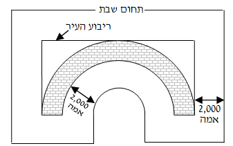 מלשון זו משמע, שבתוך קשת גדולה אין מרבעים את העיר כלל, וצורת התחום תהיה רצועה של אלפיים אמה צמודה לצורת הקשת. וזהו דין יחודי שגבול העיר ותחום השבת אינו ישר אלא מעוגל.
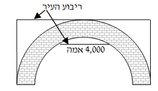 אמנם, בתוספות (נה, ב, 'ואם לאו') כתבו שמותחים לה קו במקום שהתקצרה הקשת מארבעת אלפים אמה, וממנו מודדים תחום אלפיים אמה. וכ"כ רא"ש (ה, ב), רשב"א, ריטב"א, ר"ן (על הגמ' שם), וטור ורמ"א שצח, ד, ושועה"ר ד.
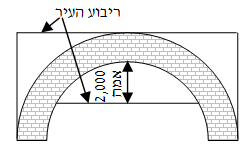 אמה "/> 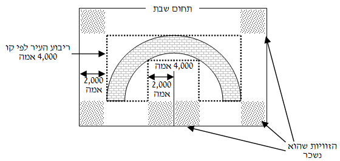 על פי דעת התוספות והרא"ש כתב הטור, שאפשר למתוח קו בתוך הקשת במרחק אלפיים אמה מעומק הקשת ולמדוד ממנו תחום שבת. וכ"כ מ"א שצח, ג. אבל בבאו"ה 'וי"א' כתב, שאין לסמוך על דעה זו, שהיא קולא יתירה, ולכן לא הביאה רמ"א.
הרי שיש לנו שתי דעות להלכה, דעת הרמב"ם ושו"ע, שמודדים אלפיים אמה מקו הבתים העגול. ודעת התוס', הרא"ש והרמ"א, ורוב הראשונים, שבמקום שהקשת התקצרה מארבעת אלפים אמה מותחים קו ישר, וממנו מודדים אלפיים אמה.
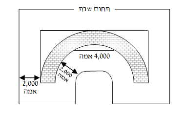 בהגהות רבי יעקב עמדין (עירובין נה, א, מופיע בסוף המסכת) כתב: "נראה פשוט שלא הפסידה זויותיה של גבנינות הקשת אלא ודאי מרבעים חצי עגולה שמצד החוץ כדין עיר עגולה דהא כבר קתני לה. ולא נצרכה אלא לאשמועינן דין חללה וצד קערירותה. והוא הדין אם היה גב משתפע שסובב הולך באלכסון שאז נותנין לו יתר במקום שמתקצר קטרו ועומד על פחות מד' אלפים (כמ"ש תוס') שם מותחין לו חוט של יתר ונעשה קערירותו של קשת ג"כ מרובע, וכן לצדדיו עושין שתי צלעותיו מרובעים. נמצא הן שלושה מרובעים זה אצל זה. וכשיש הבלעת תחומין בין שני ראשי קשת עושין אותו מרובע אחד גמור שוה מכל צדדיו". אלא שאם מרבעים שני צידי הקשת משני צידי המקום שנתקצר מארבעת אלפים אמה, יש לשאול שתי שאלות. ראשית, עד איזה גודל מרבעים אותם? הרי יתכן שצידי אותו קו יהיו גדולים מאד, ולא יתכן לרבעם בכל גודל שיהיו. שנית, אם מרבעים משני צידי אותו קו, ייסגר התחום במרובע כאילו ריבענו העיר כולה במקום היתר, כיוון שהזוויות שיהא אותו הריבוע נשכר יסגרו את כל מקום המגרעת.
ובחזון איש (או"ח קי, י) משמע שכל מה שמעבר לאותו קו שהתקצר מארבעת אלפים אמה לא מרבעים כלל, אלא נותנים לו רצועה של אלפיים כפי צורת הקשת. שכך כתב: "ובשעה שיוצא מפתח הבית בכל בית ובית יש לו אלפים אם כן הדין נותן שיש להעיר תחום כחצי קשת אלפים מכל בית ובית... מיהו אם יש אלפים מודדין מן הקשת, אע"ג דמרבעין חלק העיר שאין ביתר שלו ד' אלפים".
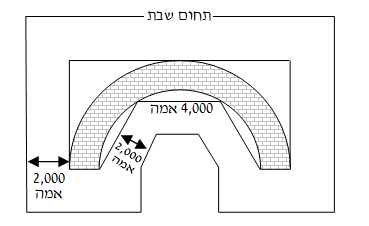 וכיוון שכבר למדנו שלדעת הרמב"ם ושו"ע, הולכים בכל הקשת לפי העיגול, ומה שחידשו התוס' והרא"ש שבמקום שהקשת התקצרה מארבעת אלפים אמה מותחים קו ישר, נוגע רק לאותו מקום, אבל בשאר הקשת הולכים עם הקו העגול, וממנו מודדים אלפיים אמה לתחום שבת.
ואמנם אפשר היה להציע עוד אפשרות לפי העמדה שגם בתוך עיגול עדיין מרבעים, שלפי עמדה זו אמרו התוס' והרא"ש, שיש למתוח קו במקום שהתקצר מארבעת אלפים אמה, וכן אפשר למתוח קו ישר מקצה אותו הקו ועד ראש הקשת בכל צד.
ונראה למעשה שהלכה כרמ"א, שכך היא דעת רוב הפוסקים, ולאחר המקום שהתקצר מארבעת אלפים אמה, הולכים לפי קו הקשת, וכפי שכתב החזו"א. אלא שכאשר קשה למדוד את המקום העגול, אפשר לסמוך על הקו הישר כשרטוט הקודם, שכן לרבי יעקב עמדין ממילא מקילים יותר.
נחלקו הראשונים כיצד מרבעים עיר העשויה כגאם. 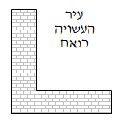 לדעת הרשב"א, הר"ן, הריטב"א והמאירי, מרבעים אותה לפי הזווית היש רה שלה. וכתבו שם שיש מפרשים שמרבעים אותה לפי היתר, וכך דעת החתם סופר (או"ח צד), ודייק בשבט הלוי (ה, קלב) שכן דעת רמב"ם וטור ושו"ע. וכן משמע מהרב קאפח בפירוש דברי הרמב"ם. ולדעת שועה"ר שצח, ג, וח"א עו, יד, מרבעים אותה לריבוע העולם.
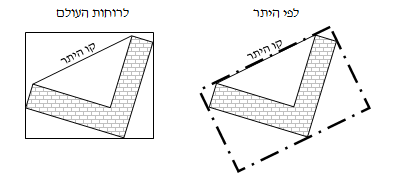ומדין קשת למדו שכאשר יש יותר מארבעת אלפים אמה בין שני קצוות הגאם - אין מרבעים אותה, אלא נותנים אלפיים אמה כצורת הגאם (מ"ב שצח, יג, ע"פ רשב"א וריטב"א).
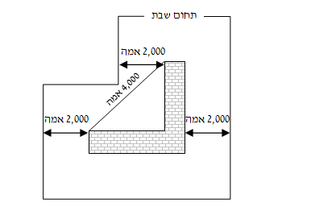
אמנם כתב בשעה"צ שצח, ה, ע"פ ריטב"א, שאם האלכסון בין ראשי הגאם יותר מארבעת אלפים אמה, מרבעים במקום שהתקצר מארבעת אלפים אמה, וכפי שכתב ברמ"א לגבי עיר העשויה כקשת. וצורת ריבוע זו מסרבלת את ריבוע העיר מאד, ונראה ששאר הראשונים שלא כתבו כן אינם מסכימים לדעתו. וכך משמע מהרמב"ם ושו"ע שאפילו בקשת לא כתבו כך, ועל כן נראה למדוד בעיר כזו אלפיים מצורת הגאם בלא לרבע כלל.
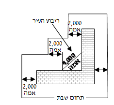עירובין נב, ב, במשנה: "כיצד מעברין את הערים? בית נכנס בית יוצא, פגום נכנס פגום יוצא. היו שם גדודיות גבוהות וגשרים ונפשות שיש בהן בית דירה - מוציאין את המדה כנגדן, ועושין אותה כמין טבלא מרובעת כדי שיהא נשכר את הזויות". ושם כא, א: "אמר ליה רב חסדא למרי בריה דרב הונא בריה דרב ירמיה בר אבא: אמרי אתיתו מברנש לבי כנישתא דדניאל דהוה תלתא פרסי בשבתא, אמאי סמכיתו?... נפק ואחוי ליה הנהו מתוותא דמבלען בשבעים אמה ושיריים". כלומר, נהגו ללכת מברנש לבית הכנסת של דניאל בשבת, אף שהיה במרחק של י"ב מיל, מפני שהיו שם בתים חרבים שהמרחק ביניהם פחות משבעים אמה ושיריים, וכך נחשב כל המרחק הזה כעיר אחת. וכ"כ רמב"ם (שבת כח, ב) ושו"ע (שצח, ו): "היה בית זה קרוב למדינה בשבעים אמה, ובית שני קרוב לבית ראשון בשבעים אמה, ובית שלישי קרוב לשני בשבעים אמה, וכן עד מהלך כמה ימים - הרי הכל כמדינה אחת, וכשמודדין מודדין מחוץ לבית האחרון".
עירובין נט, א: "עיר של יחיד ונעשית של רבים - מערבין את כולה. ושל רבים ונעשית של יחיד - אין מערבין את כולה, אלא אם כן עשה חוצה לה כעיר חדשה שביהודה, שיש בה חמשים דיורין, דברי רבי יהודה. רבי שמעון אומר: שלש חצירות של שני בתים". ניתן ללמוד ממשנה זו שגדר עיר לרבי יהודה הוא חמישים דיורין, ורבי שמעון מיקל, שדי בשלוש חצרות של שני בתים. בשו"ע (שצח, י) כתב ששלוש חצרות של שני בנים נחשבות עיר. ובחזו"א (או"ח קי, יט) משמע שגם שישה בתים שלכל אחד מהם חצר נחשבים עיר. ובתיקון עירובין (ה, מג) למד מכאן שאם אין חצירות לבתים, יודו כולם שאם יש שם חמישים דיורין נחשב המקום כעיר. ובמהרש"ם (דעת תורה שצח, א) משמע שהצריך מאה דיורין להחשיב המקום כעיר, וכפי שלמדנו בעיר הנידחת שבפחות ממאה תושבים אינה נחשבת עיר.
יש לברר, האם הבית השני צריך להיות בתוך שבעים אמה ושיריים של הבית הראשון דווקא, כציור א', או שיכול להיות בתוך שבעים אמה ושיריים של הריבוע החדש הכולל את הבית הראשון, כציור ב'.
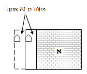 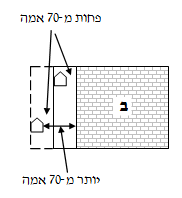אמרו בירושלמי עירובין פ"ה ה"א: "מהו ליתן פגום לפגום? מילתא דרבי שמעון בן לקיש אמרה: כן, נותנין פגום לפגום". ופירש קרבן העדה, שזו היתה שאלת הירושלמי, והתשובה שאכן מחשבים מהריבוע. וכן משמע מדברי הרמ"א (שצח, ה), בדין קרפף שנותנים לעיר, שכתב: "וי"א שאין מתחילין למדוד מיד מן הבית, אלא מותחין חוט על פני רוחב העיר נגד הבית, ומרחיקין משם שבעים אמה ושיריים, ומתחילין. וכן בכל מקום שמודדין (טור), וכן נראה לי להקל". מדבריו למדנו שנותנים את הקרפף אחרי הבית היוצא, והקרפף הוא אותה רצועה של שבעים אמה ושיריים לכל אורך אותו הצד, וממילא אם יש בית נוסף בתוך אותו הקרפף, מרחיבים את הריבוע ומוסיפים עוד שיעור קרפף ממנו. וכיוצא בזה כתב חזו"א או"ח (קי, טז), שריבוע עיר הפוגש בריבוע של עיר אחרת מחבר את הערים, ולפי זה משמע שאין צורך שיהיה הבית הנוסף קרוב לחבירו, אלא במרחק של קרפף מהקו הקודם של ריבוע העיר. וכתב חזו"א שכך דעת רש"י (עירובין נה, א, לגבי עיר שנפרצה). (אמנם בסימן פ, על עירובין נה, א, כתב שאין ריבוע מצרף ערים להיחשב עיר אחת, אך שם הכותרת "הערות שלא בעיון בספרי המפרשים והפוסקים ז"ל"). וכן פסק בשו"ת מנחת יצחק ח, לג, וכתב ב'תיקון עירובין' (פרק ה' הערה קיט) שבספר ישועת דוד (או"ח סימן מה) הוכיח שכן דעת המאירי.
אמנם מלשון שו"ע (שצח, ו): "היה בית קרוב לעיר בע' אמה ובית שני קרוב לבית הראשון בע' אמה ובית שלישי קרוב לשני בע' אמה וכן עד מהלך כמה ימים - הרי הכל כעיר אחת וכו'", משמע שדווקא בית שקרוב לבית הקודם ע' אמה מצטרף לעיר, ולא בית שקרוב לריבוע העיר. וכן כתב הרב אריאל בוקוואלד בספרו קרית אריאל שהורה הרב אלישיב.
כבר למדנו, שכפרים סמוכים, שאין ביניהם מאה ארבעים ואחת אמה ושליש, נידונים ככפר אחד, ותחום השבת שלהם הוא תחום אחד. ובגמרא (נז, ב) מבואר שאם יש שלושה כפרים שמסודרים בצורת משולש, כך שאחד עומד מול הרווח שבין השניים האחרים, והמרחק שלו מהם פחות מאלפיים אמה, רואים כאילו נמצא הכפר השלישי בין שני הכפרים, ואם הרווח הנותר בין הכפר השלישי לשני הכפרים אחרי שנכניס אותו ביניהם הוא פחות ממאה ארבעים ואחת אמות ושליש בכל צד, רואים את שלושת הכפרים ככפר אחד, ומרבעים אותם כאחד, ותחום שבת שלהם הוא תחום אחד. וכן פסק שו"ע שצח, ח.
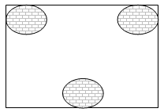הטור כתב תנאי שלא יהיה הכפר השלישי גדול מהרווח שבין השניים ופסקו כדבריו שו"ע הרב (שצח, יב) והלבוש (שצח, ח. ורבים מפוסקי זמננו הביאו תנאי זה). אבל שו"ע, רמ"א ומ"ב, לא הביאו תנאי זה, וכתבו ערוה"ש (שצח, יט) ותוספת שבת שלא הביאוהו כי לא סבירא להו תנאי זה.
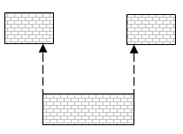תנאי נוסף כתב הטור, שכל דין כפרים המשולשים מועיל לשני הכפרים ולא לכפר השלישי, כך שאת שני הכפרים מרבעים כאחד, ואת השלישי מרבעים לעצמו. ותנאי זה הביא הרמ"א שצח, ח. וכתב מ"ב שיש להקל בזה כדעת שו"ע שצח, ח, שסובר שמרבעים גם את השלישי עמהם.
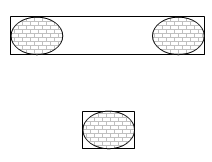אמרו חכמים, שאם זה שיצא מתחומו היה נצרך לנקביו, רשאי ללכת יותר מד' אמות כדי למצוא מקום צנוע. ואם יצא בשוגג, עצה טובה שילך לכיוון תחומו, שאם יצא שתוך הליכתו למקום צנוע יחזור לתחומו, יהיה רשאי אח"כ ללכת בכל התחום הראשון שלו, שהרי הוא נחשב כמי שחזר לתחום בשגגה. אבל אם יצא במזיד, גם אם יחזור בשגגה או באופן זה לתחומו, אין לו אלא ארבע אמות בלבד (עירובין מא, ב; שו"ע תו, א).
אם יצא מן התחום במזיד וחזר במזיד לתוך עירו שאינה מוקפת מחיצה, כתב בית מאיר, שלדעת השולחן ערוך (תה, ח), מהלך בכולה (בכל העיר ולא בכל התחום), ולכך נטה בבאו"ה 'אם' למעשה. ולדעת רמ"א אין לו אלא ארבע אמות. ואם עירו מוקפת מחיצה, גם לדעת הרמ"א מהלך בכולה.
גם לצורך יראה מותר להניח 'עירוב', כגון שהוא מתיירא מגויים שיבואו אליהם, ורוצה שתהיה לו אפשרות לברוח לעיירה אחרת (שו"ע תטו, א). וכמובן, שאם יש חשש סכנת נפשות, אינו צריך עירוב כדי לברוח.
הניח לצורך מצוה - מותר להשתמש לדבר הרשות.
הניח לדבר הרשות - בדיעבד עירובו עירוב. כך דעת הרמב"ם וכ"כ שו"ע תטו, א. אמנם לדעת בה"ג אינו עירוב. ולדעת הרשב"א אם עירב ברגליו הריהו עירוב, ואם עירב בפת אינו עירוב.
עיין לעיל (ל, ו, ב) שיחיד יכול לקבוע את כיוון תחומו, ויסוד לכך מדין טלטול ב' אמות, שאם יכול לקבוע את זווית המרובע שלו, כמבואר לעיל (כא, ו, א).
אמנם יש לשים לב, שכאשר אדם מכוון את התחום באלכסון עלול גם להפסיד. אם יש ישוב שנבלע כולו בתחום עירובו, נחשב לו אותו ישוב כארבע אמות, וממשיכים למדוד אלפיים אמה לאחר הישוב (שו"ע תח, א; ובספר ל, ד, 5). הלכה זו של ישוב הבלוע בתחומו שנחשב כארבע אמות, היא רק אם הישוב בלוע בתוך אלפיים אמה שכנגד מקום שביתתו, ולא כשהישוב בלוע באלכסון למקום שביתתו (נוב"י תנינא או"ח נ; תיקון עירובין ו הערה קלח). ולכן, אם כיוון את אלכסון תחומו כלפי הישוב, גם אם הישוב כולו בלוע בתחומו, לא נחשב לו כארבע אמות.
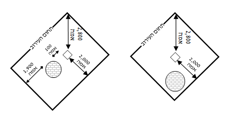בשו"ע (רסא, ד) כתב שאין מערבין אחר שקיבלו עליהם שבת. ובסימן שצג, ב, כתב שמערבין עירובי חצרות בין השמשות והוסיף שיש אוסרים. ומשמע שנוטה להקל (באו"ה רסא, ד, 'אין מערבין'), ומהגר"א משמע להחמיר (מ"ב שצג, יב). ובא"ר חילק בין ציבור שקיבל שבת, שאין מערבין, ליחיד שקיבל שבת שיכול עוד לערב. ובפמ"ג (א"א רסא, יב) חילק בין עירוב תחומין שאין מערבין, לעירוב חצירות שמערבין, ובאו"ה תמה על דבריו.
בנתיבות שבת (מו הערה ה), כתב שלא יברך, ושכן נראה מפמ"ג (מש"ז תט, ז, א"א תטו, ד) שאין לברך על מחשבה. אמנם מתוספת שבת (תטו, י) נראה שיברך. וביאר את סברתו בנתיבות שבת, שיש תיקון בעירוב ברגליו, שהרי מועיל לו לעקור שביתת ביתו. ויש להוסיף שאין לומר שזו ברכה על מחשבה, שהרי עושה מעשה - שהולך למקום השביתה. ואם בא בדרך, ושביתתו במקומו - נראה פשוט שגם לדעת תוספת שבת לא יברך. ומ"מ גם במערב ברגליו הווי ספק ברכות להקל, ולא יברך. וכן נראה מסברה, שהלא כיוון שהוא שם ומתכוון לשבות שם, מה צורך לברך, וכמו שאין אדם מברך על שביתתו בביתו.
הרב מיכאל פרץ באוצר פסקי עירובין סימן קכח כתב, שזמן הנחת ה'עירוב' הוא רק מחצות יום שישי ואילך, אבל אם הניח את העירוב קודם לחצות יום שישי אינו עירוב. וכאשר הניח את העירוב בזמן, יכול לקובעו לשבתות רבות. ומנגד בתיקון עירובין כתב, שאפשר לקובעו בכל השבוע. ונראה שאפשר לקובעו כל השבוע, אבל מספק לא יברך. ויש לעיין אם אפשר להניח בימות השבוע ולברך בערב שבת.
בעקרי הד"ט (או"ח כד, ח) כתב שאסור לערב עירוב תחומין על פח שמן שיש לו בסוף התחום, שהרי צריך לומר "בעירוב הזה..." והוא אינו לפניו, והביא דברי החיד"א בשו"ת חיים שאל (א, כט) שכתב כן לגבי עירוב תבשילין. ובשו"ת מהרש"ם הביא דבריהם, וכתב שיש לפקפק, שהרי בעירוב תחומין אמנם אמירה מעכבת, אך לא נוסח "בעירוב הזה" דווקא, אך כתב שקשה להקל נגד הגדולים הנ"ל. ובתפארת ישראל (בעז ביצה ב, ב) התיר לעשות עירוב תבשילין אף שהמזון אינו לפניו, וכתב שמברך על עירוב זה. ובשו"ת דברי מלכיאל (ג, ח) חלק על עיקר דברי החיד"א בעירוב תבשילין וסיכם שבשעת הדחק אפשר לעשות עירוב תבשילין אף כשהמאכל אינו לפניו. וכ"כ בשו"ת שלמת חיים (או"ח רצא), ובשו"ת בצל החכמה (ה, קלז).
לעניין הברכה, כתב במ"ב (שסו, פא) לגבי עירוב חצירות: "ומכל מקום בדיעבד, אפילו כבר זיכה, גם כן יוכל לברך. דעיקר קניית עירוב חל בעת כניסת השבת, ומקרי בכל גווני עובר לעשייתן. ובפרט אם לא הונח העירוב עדיין במקומו, בודאי שייך לברך, דלא נגמר עדיין המצוה". ומשמע מדבריו שבדיעבד, אפילו כבר הונח במקומו, כל עוד לא נכנסה שבת עדיין לא חל העירוב, ויכול לברך ונקרא עובר לעשייתן.
ואם כן, נראה שגם בנידון דידן, בשעת הדחק כאשר מערב עירוב תחומין על מזון שאינו נמצא לפניו - מברך.
לדעת חכמים ור' יהודה במשנה עירובין לו, ב, מועיל תנאי לעירוב, שבשבת יחליט על איזה 'עירוב' הוא רוצה לסמוך, האם לזה שלצד מערב או שלצד מערב, מפני שלדעתם 'יש ברירה', היינו שכאשר יחליט על איזה 'עירוב' הוא רוצה לסמוך, יתברר למפרע שזה ה'עירוב' שהניח בערב שבת. ולדעת איו (שם חכם) בברייתא שם, ר' יהודה סובר ש'אין ברירה'. וכן נחלקו בברייתא שם לז, ב, שלר' שמעון 'יש ברירה', ויכול לקבוע 'עירוב' לכל שבתות השנה על דעת שבכל שבת יוכל להחליט אם ירצה לסמוך על ה'עירוב' או לא. ולחכמים 'אין ברירה'. ובביצה לח, א, מובאת דעת רבי אושעיא שבדין דאורייתא 'אין ברירה' ובדין דרבנן 'יש ברירה', ואמר מר זוטרא שהלכה כדבריו. וכך דעת רוה"פ, ומהם: רמב"ם, ר"ת, רא"ש, רמב"ן, ר"ן, רשב"א, שו"ע יו"ד שלא, יא. וכן אצלנו שו"ע תיג, א, מ"ב, ז. (ולר"י 'יש ברירה' גם בדאורייתא, ולמהר"ם כמובא במרדכי 'אין ברירה' גם בדרבנן).
מה שכתבתי לעניין הברכה, כך כתב גם הרב פרץ באוצר פסקי עירובין סימן קלה, שיש לברך רק כאשר ברור שישתמשו בעירוב.